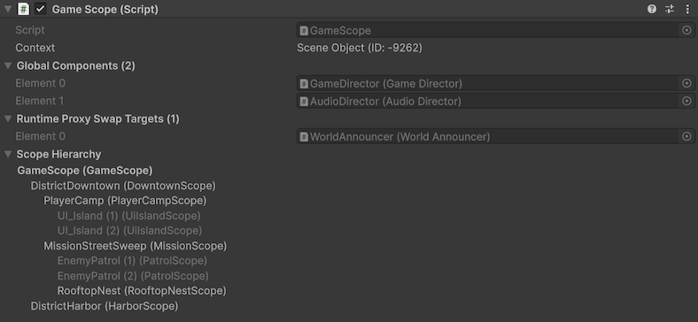
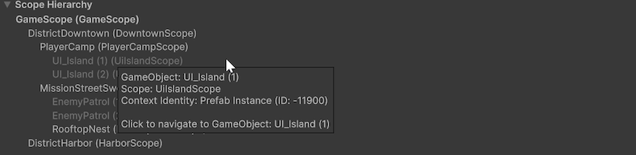
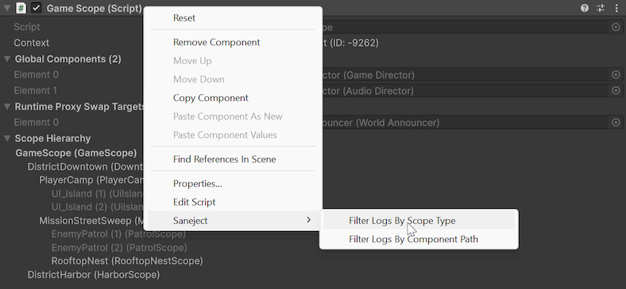
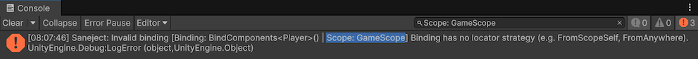

Scope inspector
The Scope inspector is the main inspector surface for working with one scopeScopeMonoBehaviour that declares bindings for a part of your hierarchy. at a time.
It combines contextContextSerialization boundary Saneject uses during injection to decide scope traversal and candidate eligibility. visibility, runtime preparation details, and scopeScopeMonoBehaviour that declares bindings for a part of your hierarchy. navigation in one place.
For injection workflows, use the contextual main toolbar buttons, injection context menuInjection context menuEditor command under Saneject/Inject Scene/..., Saneject/Inject Selected Scene Hierarchies/..., Saneject/Inject Prefab Asset/..., or the matching GameObject/Saneject/... paths that start an injection run with a selected target and ContextWalkFilter., or batch injectionBatch injectionRunning injection across multiple selected scene and prefab assets in one operation..

What this inspector is for
Use the Scope inspector when you want to:
- Verify which contextContextSerialization boundary Saneject uses during injection to decide scope traversal and candidate eligibility. the selected scopeScope
MonoBehaviourthat declares bindings for a part of your hierarchy. belongs to. - See what the scopeScope
MonoBehaviourthat declares bindings for a part of your hierarchy. has prepared for runtime global registrationGlobal registrationEntry added toGlobalScopeat runtime, keyed by the component's concrete type and owned by the caller that registered it.. - See which components are registered as runtime proxyRuntime proxy
ScriptableObjectplaceholder asset (RuntimeProxy<TComponent>) injected into interface members at editor time and swapped to the real instance during scope startup. swap targets. - Navigate to related scopesScope
MonoBehaviourthat declares bindings for a part of your hierarchy. in the same hierarchy.
For the underlying concepts, see Scope and Context.
Inspector sections
When exactly one Scope is selected, the inspector draws the sections below.
Context
The Context line shows the selected scopeScopeMonoBehaviour that declares bindings for a part of your hierarchy.'s contextContextSerialization boundary Saneject uses during injection to decide scope traversal and candidate eligibility. identity.
- With context isolationContext isolationProject setting (
UseContextIsolation) that controls whether dependency resolution can cross context boundaries. enabled, it shows the contextContextSerialization boundary Saneject uses during injection to decide scope traversal and candidate eligibility. type and contextContextSerialization boundary Saneject uses during injection to decide scope traversal and candidate eligibility. ID. - With context isolationContext isolationProject setting (
UseContextIsolation) that controls whether dependency resolution can cross context boundaries. disabled, it showsContext Isolation Offinstead of an ID.
This helps you verify whether scopesScopeMonoBehaviour that declares bindings for a part of your hierarchy. are in the same contextContextSerialization boundary Saneject uses during injection to decide scope traversal and candidate eligibility. before running injection.
For details, see Context.
Global Components
Global Components is a read-only foldout that lists the serialized components this scopeScopeMonoBehaviour that declares bindings for a part of your hierarchy. will register in GlobalScope during Scope.Awake().
For details, see Global scope.
Runtime Proxy Swap Targets
Runtime Proxy Swap Targets is a read-only foldout listing components in this scopeScopeMonoBehaviour that declares bindings for a part of your hierarchy. that have runtime proxyRuntime proxyScriptableObject placeholder asset (RuntimeProxy<TComponent>) injected into interface members at editor time and swapped to the real instance during scope startup. placeholders and will be asked to swap those proxies for resolved runtime instances during scopeScopeMonoBehaviour that declares bindings for a part of your hierarchy. startup.
For full behavior, see Runtime proxy.
Scope Hierarchy
Scope Hierarchy shows a tree of scopesScopeMonoBehaviour that declares bindings for a part of your hierarchy. under the current hierarchy root.

- The currently inspected scopeScope
MonoBehaviourthat declares bindings for a part of your hierarchy. is shown in bold. - Each scopeScope
MonoBehaviourthat declares bindings for a part of your hierarchy. node in the tree is clickable and navigates to that scopeScopeMonoBehaviourthat declares bindings for a part of your hierarchy.'sGameObject. - If context isolationContext isolationProject setting (
UseContextIsolation) that controls whether dependency resolution can cross context boundaries. is enabled, scopesScopeMonoBehaviourthat declares bindings for a part of your hierarchy. in a different contextContextSerialization boundary Saneject uses during injection to decide scope traversal and candidate eligibility. than the inspected scopeScopeMonoBehaviourthat declares bindings for a part of your hierarchy. are grayed out. - Hovering a scopeScope
MonoBehaviourthat declares bindings for a part of your hierarchy. node shows a tooltip with extra details, includingGameObject, scopeScopeMonoBehaviourthat declares bindings for a part of your hierarchy. type, and contextContextSerialization boundary Saneject uses during injection to decide scope traversal and candidate eligibility. identity.
This is useful for understanding where local bindingsBindingInstruction declared in a Scope that tells Saneject what to resolve, how to inject it, and where to search. are declared and how parent fallback will behave.
See Scope and Context for details.
Scope serialized fields
After the Saneject sections, the inspector draws serialized fields on your concrete scopeScopeMonoBehaviour that declares bindings for a part of your hierarchy. component.
This keeps bindingBindingInstruction declared in a Scope that tells Saneject what to resolve, how to inject it, and where to search. authoring fields and scopeScopeMonoBehaviour that declares bindings for a part of your hierarchy. operations in one view.
Console filtering context menus
Saneject adds component context menu items to quickly filter logs.
Saneject/Filter Logs By Scope Type- Sets the Console search text to filter by
Scope: <ScopeTypeName>.
- Sets the Console search text to filter by
Right click on component header and Saneject/Filter Logs By Scope Type:

This adds the Scope type to the Console search text:
